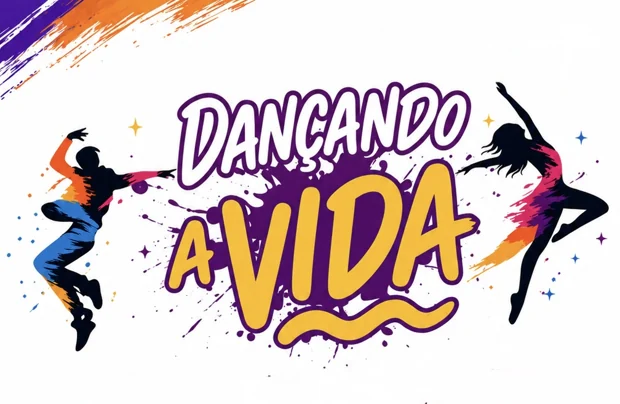
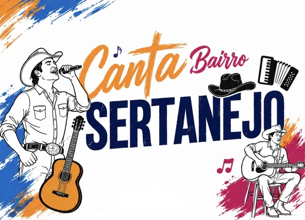
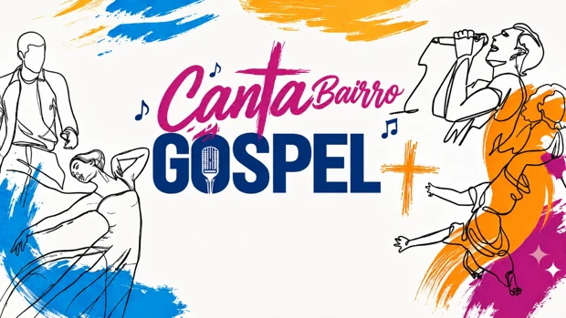

Cultura e encontro
Grande Parada Encantada
A proposta é reunir a comunidade em uma celebração coletiva e criar um espaço de encontro pela cultura.
Aprovação e captação citadas no mídia kit · situação atual a confirmar
Conversar sobre este projetoCultura e encontro
A proposta é reunir a comunidade em uma celebração coletiva e criar um espaço de encontro pela cultura.
Aprovação e captação citadas no mídia kit · situação atual a confirmar
Conversar sobre este projeto
Dança e formação
A proposta é levar balé clássico, jazz e dança contemporânea aos espaços públicos de Sinop, para que mais pessoas possam vivenciar a dança no dia a dia.
Proposta documentada · execução a confirmar
Conversar sobre este projeto
Cultura sertaneja
Ação cultural voltada à valorização da música sertaneja, da convivência comunitária e da ocupação artística dos espaços públicos.
Conversar sobre este projeto
Música e comunidade
Projeto sociocultural que leva música, encontro comunitário e expressão artística aos bairros, fortalecendo vínculos e ampliando o acesso à cultura.
Conversar sobre este projeto